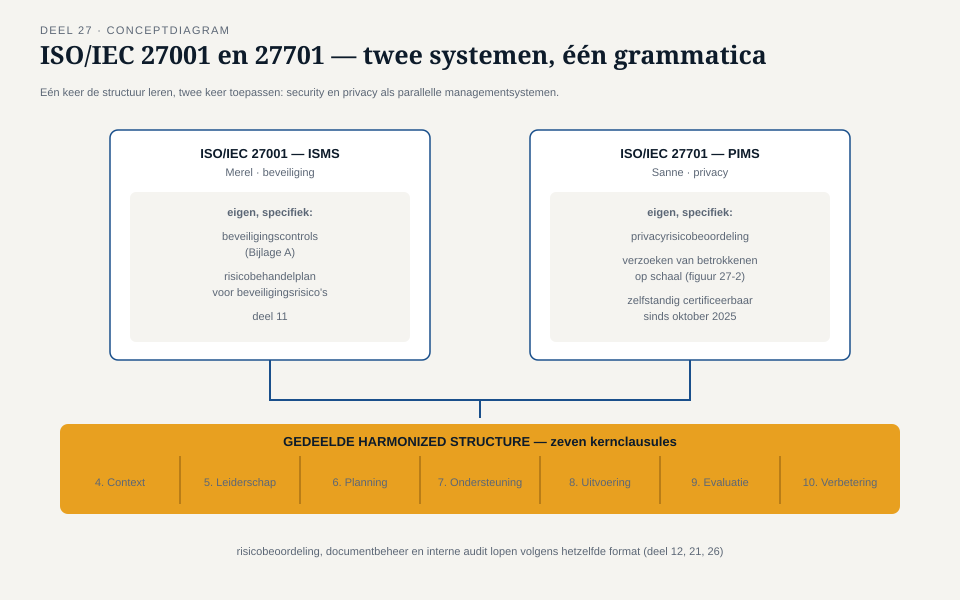
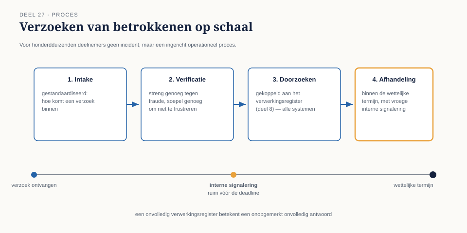
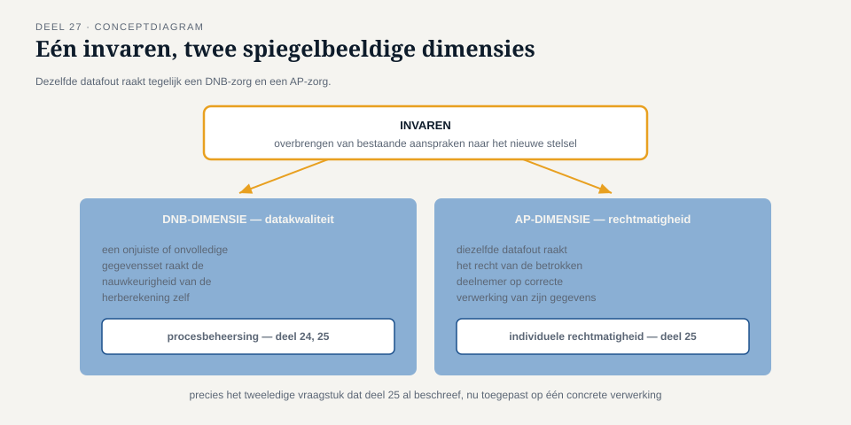

Deel 27 — Een privacyprogramma besturen
Slidedeck · Ductus-cursus Informatiebeveiliging en privacy · niveau 3 · deel 27 van 30 · 23 slides
Slide 1 — Titel
Informatiebeveiliging en Privacy
Deel 27 · Niveau 3 · Expert
Een privacyprogramma besturen
Slide 2 — Sannes parallelle groei
Van FG voor één programma naar FG voor de hele organisatie.
Eigen team. Eigen budget.
Slide 3 — Hugo's spiegelvraag
"Merel heeft een ISMS.
Heb jij iets vergelijkbaars — een systeem, geen losse DPIA's?"
Slide 4 — Sannes antwoord ligt al klaar
ISO/IEC 27701.
Zelfstandig certificeerbaar sinds oktober 2025.
Slide 5 — Hetzelfde scharnier

Dezelfde Harmonized Structure als ISO 27001.
Eén keer de grammatica leren. Twee keer toepassen.
Slide 6 — Waarom dit meer is dan een detail
Vóór 2025: privacy alleen certificeerbaar bovenop security.
Nu: twee gelijkwaardige, parallelle systemen.
Slide 7 — Opdracht 27.1
Waarom is dit meer dan administratief?
Slide 8 — Sannes situatie vóór dit deel
Losse DPIA's. Losse grondslagbeoordelingen. Een register.
Waardevol. Geen systeem.
Slide 9 — Het spiegelbeeld van deel 11
Karin aan Merel: "Ik wil iets dat blijft werken."
Nu: hetzelfde probleem, privacykant.
Slide 10 — Opdracht 27.2
Waarom is dit niet hetzelfde als "een programma besturen"?
PAUZE
Slide 11 — Verzoeken van betrokkenen op schaal

Honderdduizenden deelnemers.
Geen incident — een operationeel proces.
Slide 12 — Drie elementen
Gestandaardiseerd intakeproces
Vastgestelde doorlooptijd, vroeg gesignaleerd
Koppeling aan het verwerkingsregister (deel 8)
Slide 13 — Een onvolledig register
Een systeem nooit geregistreerd →
een inzageverzoek onopgemerkt onvolledig beantwoord.
Niemand die het merkt.
Slide 14 — Opdracht 27.3
Waarom is dit een operationeel probleem, niet alleen documentair?
Slide 15 — Bewaartermijnbeleid
Mooi geformuleerd op papier.
Geen mechanisme dat handelt bij het verstrijken van de termijn.
Slide 16 — Terug naar de drieslag
Aanwezig: ja. Aantoonbaar: nauwelijks. Werkend: vrijwel zeker niet.
Slide 17 — Opdracht 27.4
Beoordeel dit beleid op alle drie de vragen apart.
Slide 18 — Twee privacyvraagstukken van de Stelselovergang

Invaren — datakwaliteit, nu vanuit rechtmatigheidsperspectief
Overdracht van bestanden — nieuwe grondslag, nieuwe DPIA
Slide 19 — Eén datafout, twee dimensies
DNB: is het proces beheerst?
AP: is het recht op juistheid van déze deelnemer geschonden?
Slide 20 — Opdracht 27.5
Beschrijf de DNB- en de AP-dimensie van dezelfde gegevensfout.
Slide 21 — Sannes rapportage aan het bestuur
Net als Merel: geaggregeerd. Inclusief genegeerd advies,
aantoonbaar vastgelegd (deel 23).
Slide 22 — Sannes antwoord aan Hugo
"Wij hebben allebei een systeem.
Ze zien er anders uit — met dezelfde grammatica gebouwd."
Slide 23 — Vooruitblik
Deel 28: nieuwe risico's — AI en quantum